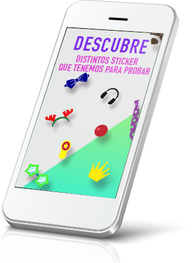
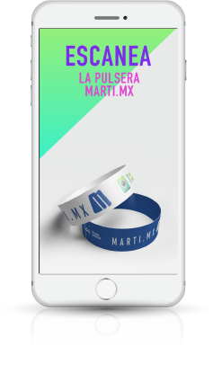

ALCANCE ORGÁNICO EN REDES SOCIALES
El usuario puede manipular sus selfie para despué enviarla y compartirla a sus redes sociales tales como facebook, instagram, twitter, entre otras.
 "
"
Instafan es la combinación de Instagram y Snapchat para el uso empresarial y de activaciones BTL en plazas comerciales, plazas públicas y de forma remota.
A través de selfies con stickers personalizados, los usuarios pueden compartir sus experiencias de marca desde cualquier parte del mundo a través de su dispositivo móvil en todas sus redes sociales.
A través de Realidad Aumentada. La cámara del dispositiv móvil escanéa y reconoce la imagen asignada para que detonde un Pack de stickers únicos de la marca. Dicha imagen puede ser cualquier gráfica (fotografía, logotipo, palabra, etc.)..
El usuario puede manipular sus selfie para despué enviarla y compartirla a sus redes sociales tales como facebook, instagram, twitter, entre otras.
"
A través de la interacción de la marca con el usuario se genera contenido, de esta forma los usuarios pasan de sólo consumir un producto o servicio a promover la marca dentro de su círculo social generando mayor impacto orgánico (no pagado) en las redes sociales donde la marca desea posicionar su producto o servicio.
Cada foto compartida lleva un “Hashtag” predeterminado por la empresa, la foto puede ser rastreada y su impacto puede ser medido con un análisis de mercado en redes sociales. De esta manera medimos con cifras reales la participación del usuario y el alcance de nuestra campaña en línea.
MARCA HONDUREÑA DE REFRESCOS QUE PERSONALIZÓ INSTAFAN PARA UNA CAMPAÑA DE 8 SEMANAS
Juntos desarrollamos una campaña BTL (online-offline) en la que participaban líderes de opinión compartiendo sus selfies con stickers que Tropical diseñó exclusivamente para la activación. Estos personajes invitaban al público en general a descargar la app y a sumarse al movimiento.
El resultado fue un alcance viral por parte de la compañía, que pudo comunicar su campaña de forma orgánica entre las redes sociales.
TIENDA DE ROPA DEPORTIVA. CAMPAÑA PARA ACTIVACIÓN DE 1 MES
Activación para presentar su nueva tienda en linea Martí.mx en un evento especial para prensa nacional. Los usuarios escanean una pulsera que se otorga primero en el evento y posteriormente en las tiendas físicas. Los usuarios detonan stickers y editan selfies que expresen su vida deportiva compartiendola en redes sociales para poder ganar descuento o premios.
| PLAN BÁSICO | PLAN PRO | PLAN CUSTOM |
|---|---|---|
| Tu marca o imagen se da de alta en la aplicación por el tiempo que requieras para realizar tu campaña (mínimo 1 mes). Los usuarios podran interactuar con el contenido que tu proporciones $149.00 USD + IVA / MENSUAL 1 Target que detonará 8 Stickers |
Si necesitas lanzar varias campañas este es el plan que te conviene, da de alta tu marca y optimiza tus recursos para un mayor alcance mediático. $99.00 USD + IVA por target / Mensual A partir de 5 targets que detonarán 8 stickers cada uno |
Personalización de aplicación instafan con el nombre e identidad que tu empresa decida, cumple con las funciones básicas de Instafan y personaliza los siguientes features - SETUP $6,590.00 USD + IVA - BRANDING $199.00 USD + IVA; - Hash Tag predeterminado - Marca de Agua - Splash screen - Instalación en dispositivos android y iOS |
instafan.com.mx
info@instafan.com.mx
52(55) 8526 2143 MX, DF ó +52 (33) 4170 8156 GDL (MX)
Calle Varsovia 36 piso 4 col. Juárez Ciudad de México
© Copyright 2016 - INSTAFAN Todos los derechos reservados